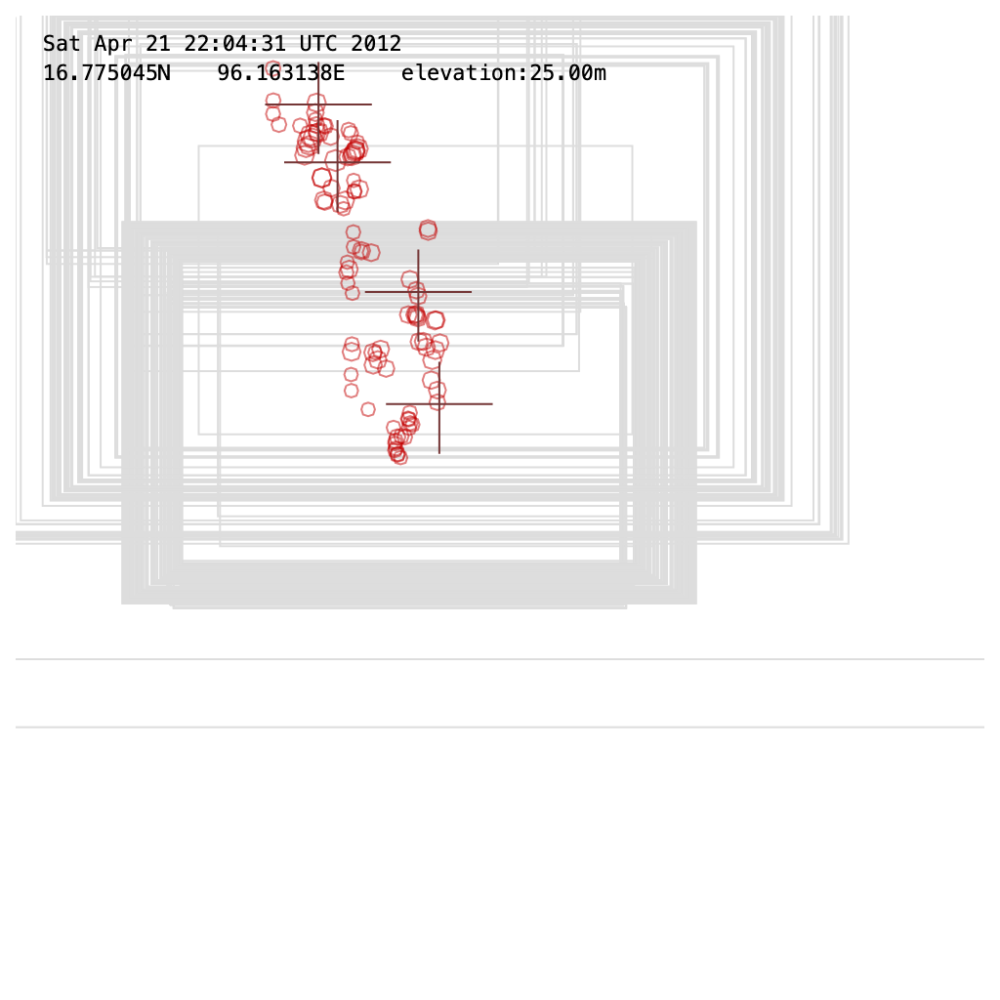
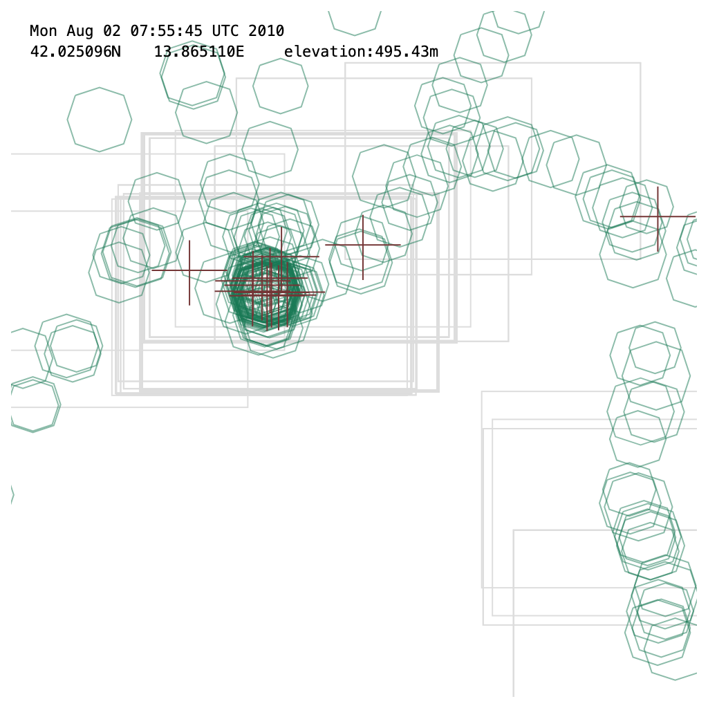
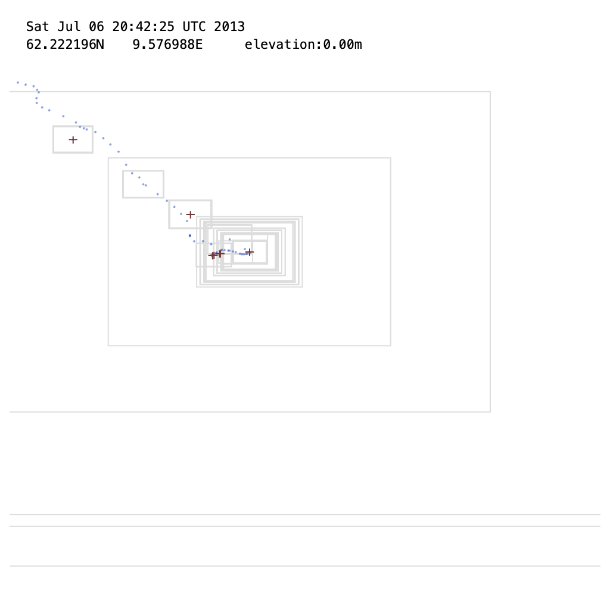

Three trips run through the Timeland renderer. Each opens in render.html?dataset=<slug>. Defaults to Iceland's 1:2 lon:lat projection; append &latfit=1 on the overnight/2026-05-14-projection-latitude-aware branch to widen by mean latitude.


